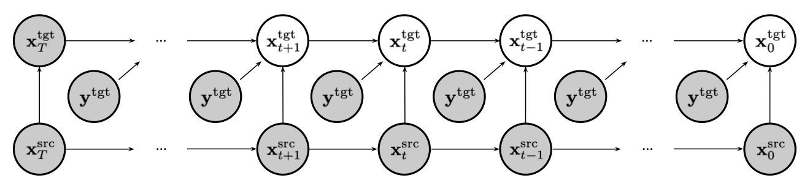
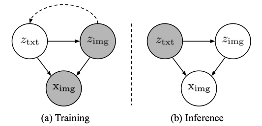
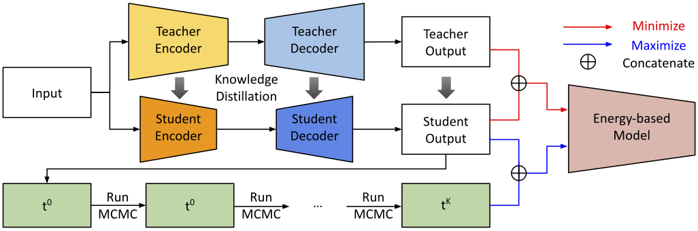
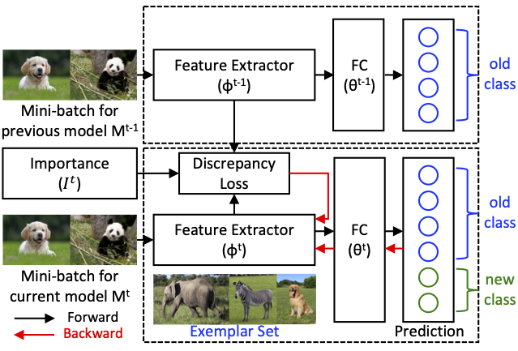
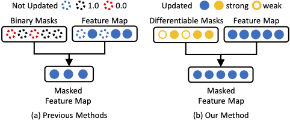
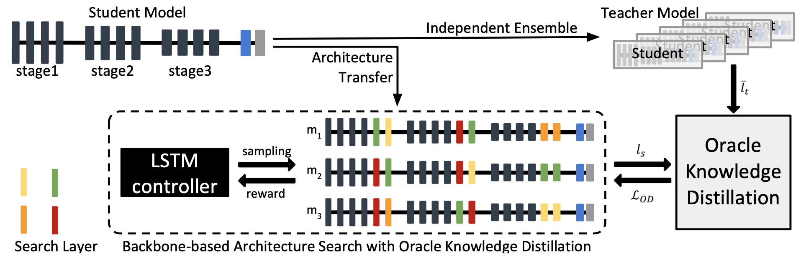

|
Minsoo Kang
|
Education
-
M.S. & Ph.D. integrated course, Computer Vision Lab, Seoul National University (Mar. 2018 – Feb. 2024 (expected))
- Advisor : Prof. Bohyung Han
-
B.S. School of Electrical Engineering, POSTECH (Mar. 2011 – Feb. 2018)
Work Experiences
-
Research Intern, Kakao Brain, Pangyo, Seongnam, Korea (Jan. 2022 – Aug. 2022)
Publications
|  |
Conditional Score Guidance for Text-Driven Image-to-Image Translation
|
|  |
Variational Distribution Learning for Unsupervised Text-to-Image Generation
|
|  |
Information-Theoretic GAN Compression with Variational Energy-based Model |
|  |
Class-Incremental Learning by Knowledge Distillation with Adaptive Feature Consolidation |

|
Class-Incremental Learning for Action Recognition in Videos |
|  |
Operation-Aware Soft Channel Pruning using Differentiable Masks |
|  |
Towards Oracle Knowledge Distillation with Neural Architecture Search
|
Awards and Honors
-
Google Ph.D. Fellowship Finalist, 2023
-
NeurIPS Scholar Award, 2022
-
Youlchon Scholarship, 2022
-
Google Student Travel Grants for CVPR, 2022
-
Jigok Scholarship, POSTECH, 2011 – 2017
-
Silver Medal, Korean Mathematical Olympiad (KMO), 2010